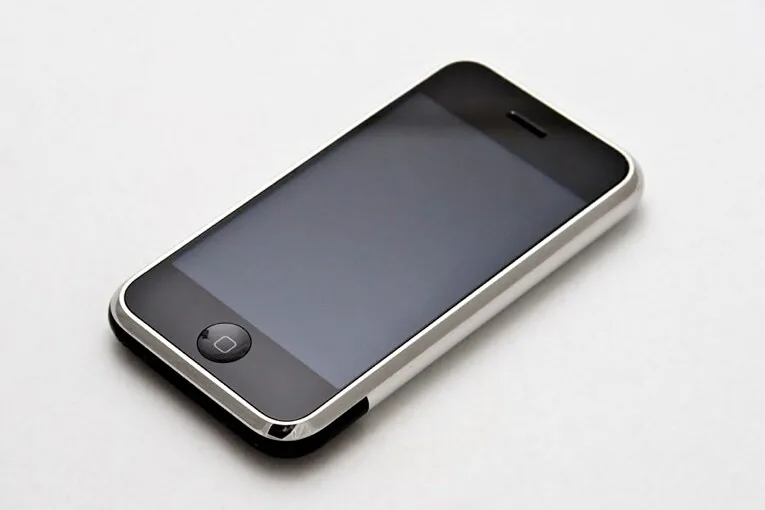
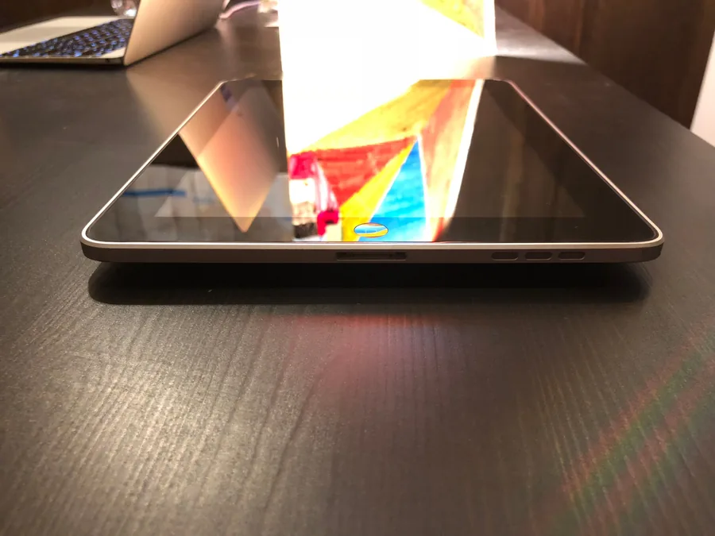
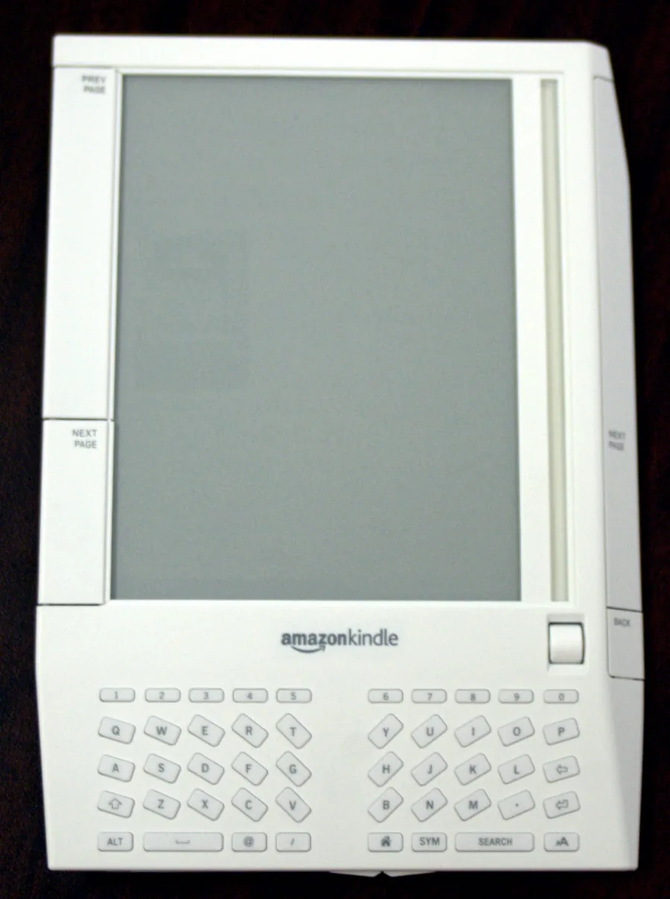
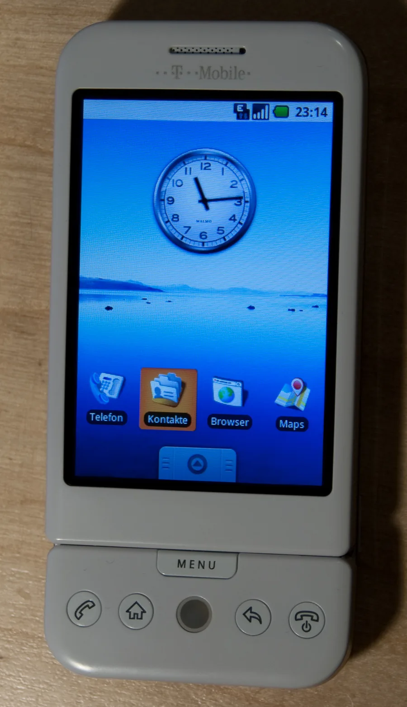

Era móvel e dos smartphones
2007 – 2013 · do iPhone ao Instagram
Antes de 2007 o celular tinha teclado físico, menus profundos, tela resistiva e uma internet reduzida chamada WAP. As peças já existiam — smartphones, 3G, câmera —, faltava reuni-las em algo simples o bastante para o grande público.

O iPhone, apresentado em 9 de janeiro de 2007, com multitouch, teclado virtual e navegador que abria a web real. A App Store abre em julho de 2008 e o Android Market em outubro, criando a distribuição centralizada com divisão de receita 70/30.
Somam-se GPS, acelerômetro e giroscópio, as redes 3G e 4G, o iPad (2010), o Kindle (2007) e aplicativos que definiram a época: WhatsApp, Instagram, Uber e Waze.


O computador deixou de ser um lugar aonde se vai e virou algo que se carrega. A competição passou a ser entre ecossistemas, não entre aparelhos — Symbian, BlackBerry e Windows Phone perderam por isso.
Nasce o modelo freemium, o projeto mobile-first e o debate sobre privacidade de localização.

O Android havia sido comprado pelo Google em 2005, de uma empresa fundada por Andy Rubin. Em 5 de novembro de 2007, Google, HTC, Motorola, Qualcomm e T-Mobile anunciaram a Open Handset Alliance para desenvolver a plataforma aberta.
| Aspecto | iOS | Android |
|---|---|---|
| Modelo | Fechado e integrado | Aberto e licenciado |
| Base técnica | Derivado do macOS (Unix) | Kernel Linux |
| Fabricantes | Só a Apple | Qualquer um, com licença gratuita |
| Resultado | Experiência uniforme | Alcance global e diversidade de preços |
- 2007
- iPhone anunciado em janeiro e lançado em junho; Open Handset Alliance e Android em novembro; Kindle em novembro.
- 2008
- iPhone 3G com GPS; App Store em julho; HTC Dream/T-Mobile G1, primeiro Android, em setembro; Android Market em outubro.
- 2009
- Google Maps Navigation por voz; fundação de WhatsApp, Uber e Foursquare; primeira rede LTE comercial em dezembro.
- 2010
- iPad em abril; iPhone 4 com giroscópio; Instagram em outubro; Windows Phone 7 em outubro.
- 2011
- Android atinge 100 milhões de aparelhos ativados em maio; Uber entra em operação pública; Snapchat é lançado.
- 2012
- Android Market vira Google Play em março; Facebook compra o Instagram por cerca de US$ 1 bilhão em abril.
- 2013
- WhatsApp ultrapassa 200 milhões de usuários; Google compra o Waze; App Store passa de 50 bilhões de downloads.
Tela inicial
Segure um ícone e arraste até outro para trocar os dois de lugar — exatamente o gesto que existe desde o primeiro iPhone. Depois compare o acabamento de 2007 com o de hoje.
Os mesmos ícones, oito anos de acabamento.
- 2007
- Vidro, brilho e sombra em cada ícone — o design imitava objetos físicos para ensinar a tocar numa tela sem instrução nenhuma.
- Hoje
- Ícones planos, sem textura. Depois de uma década, ninguém precisa mais que a tela pareça vidro para saber que pode tocar nela.
- Apple Newsroom — anúncios do iPhone (2007), App Store (2008) e iPad (2010).
- Open Handset Alliance — anúncio do Android (2007).
- Google — blog oficial do Android e lançamento do Google Play (2012).
- Amazon — lançamento do Kindle (2007).
- Anatel — leilões de 3G (2007) e 4G (2012) no Brasil.
- ITU — histórico das redes 3G e do padrão IMT-2000.
- A List Apart — Ethan Marcotte, "Responsive Web Design" (2010).
- Datas de vida conferidas no Wikidata e cruzadas com a Wikipédia; crédito das fotos na página de créditos.